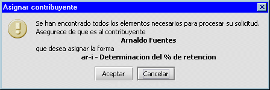

Asignar forma/contribuyente
En esta aplicación, llamamos asignar forma a la acción de asociar una forma fiscal a un contribuyente. Esta asociación inicia el editor de formas virtuales; el cual le permite completar los datos dentro de una imagen digital de la forma deseada.
Esta asociación entre el contribuyente y su forma puede establecerse desde dos sitios distintos:
- Desde lista de contribuyentes: Presionando el botón Asignar forma, despliega una lista de las formas que pueden ser asignadas al contribuyente previamente seleccionado. La aplicación revisa las formas disponibles dentro del sistema seleccionando aquellas que cumplan con los parámetros del contribuyente. Por Ej.: Si el contribuyente es una persona jurídica, no se mostrara la forma declaración para personas naturales dentro de la lista.
- Desde lista de formas: Seleccionando cualquiera de las formas disponibles en la barra de acceso rápido, presentara una lista de los contribuyentes a los cuales se les ha asignado dicha forma. Presionando Asignar contribuyente se presenta una lista con los contribuyentes que por sus características, se les puede asignar esta forma. Por Ej.: si se esta en la lista de la forma declaración persona jurídica residenciada, en la lista no aparecerán los contribuyentes naturales y no residenciados.
Ambas acciones, Asignar forma y Asignar contribuyente Verifican que exista disponibilidad de formas en el inventario si existe, se presenta el siguiente mensaje

Aquí se resume la operación que esta por suceder. Si el usuario acepta, se descuenta una forma del inventario y se presenta el editor de formas para comenzar a calcular los valores de esta declaración para el contribuyente. Si no existe disponibilidad, se presenta un mensaje indicando que no se puede completar la operación.
Nota:
No se pueden asignar mas de una forma a un contribuyente en el mismo día. Esto evita que accidentalmente se asigne mas de una forma a un contribuyente. Si desea asignar la misma forma al mismo contribuyente, deberá esperar al día siguiente.